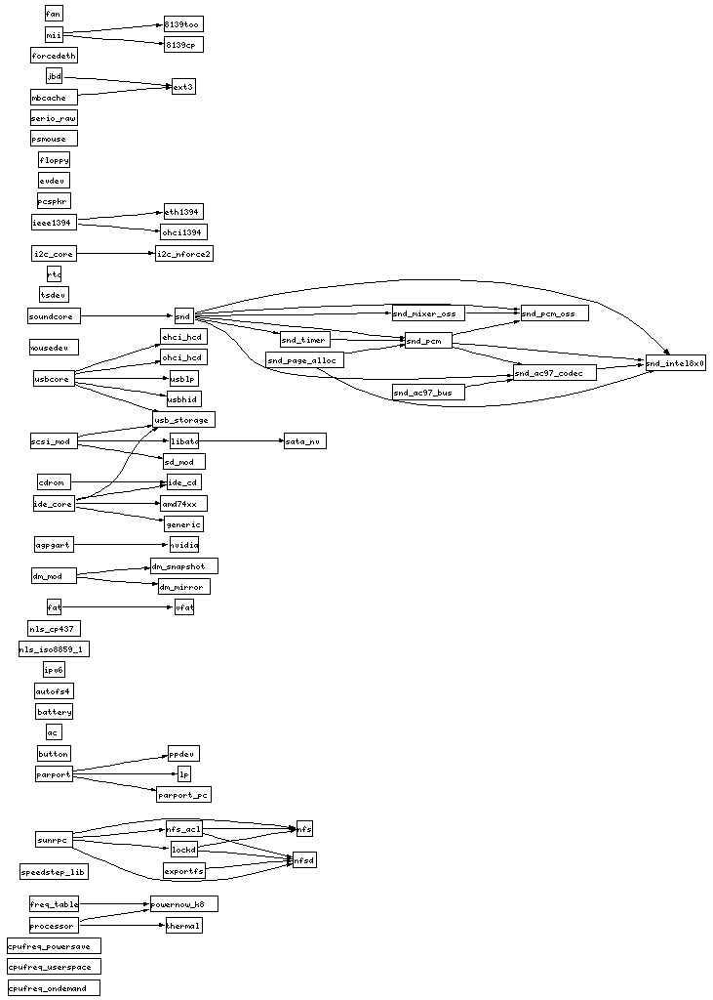
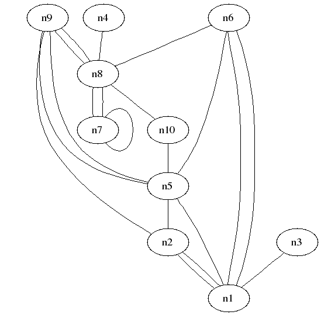
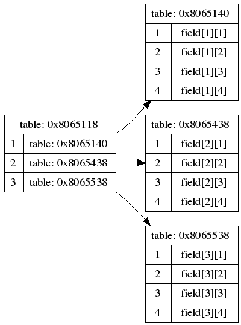
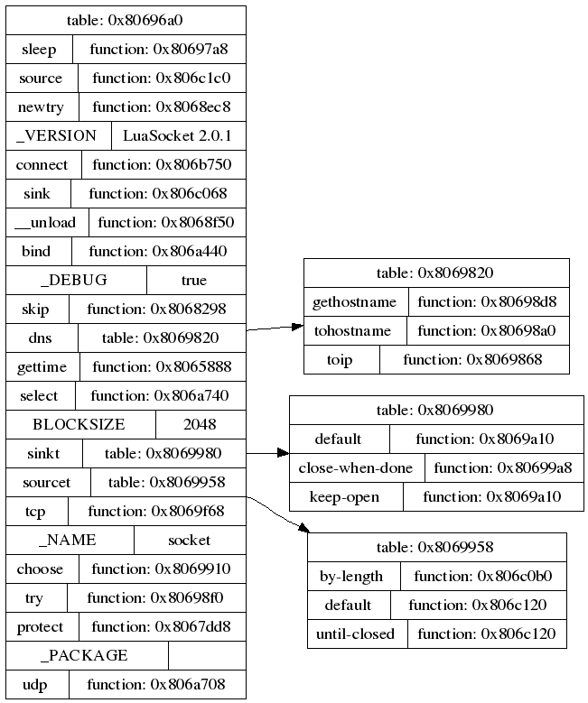

Examples
The following section provides some LuaGRAPH programming examples.
modgraph.lua
Lists the module dependencies on a Linux computer.

render.lua
Reads a graph definition from a file and displays the graph using dotty.
Graph: random.lua
Creates 10 nodes and connects them randomly.

tablegraph.lua
Maps a table to a graph using records for the tables.
The following example shows a two-dimensional array.

The following examples shows the module "luasocket" as graph.
